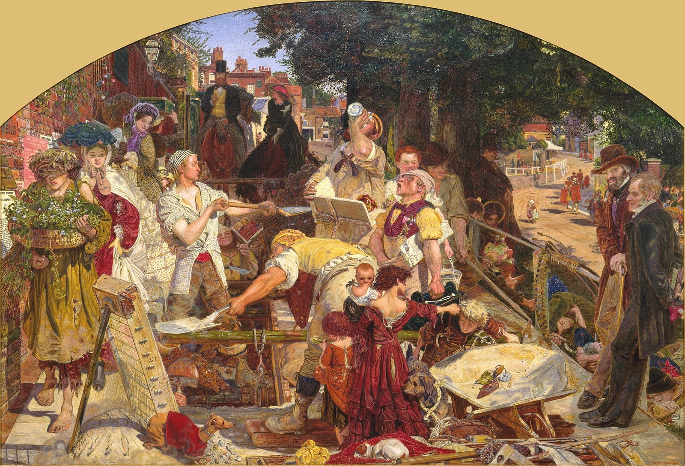

Talk to the Team

In Context
Listen, take part, hand over
Take part in a team meeting and carry out a handover in English.
Télécharger la séquence
Anglais · Terminale bac pro · toutes filières · LVA, B1 vers B1+ (Help : A2+ vers B1 ; Going further : vers B2)
Format retenu : interaction orale en jeu de rôles. Ce format convient au BO, qui donne la priorité à l’oral et consacre un tableau entier aux descripteurs de l’interaction, et qui demande de transmettre une consigne, de rendre compte, et de demander une information complémentaire.
Six lessons de 55 minutes, minutées sur 52 minutes. Tâche centrale : un jeu de rôles de passation de poste (handover) entre un collègue qui part et un collègue qui arrive. Cette séquence est écrite pour le bac pro du ministère de l’Éducation nationale, pas pour le bac pro agricole.
Question directrice : How do you hand over a job clearly, and listen in return?
Overview (Teacher version)
Public : Terminale baccalauréat professionnel, lycée professionnel (ministère de l’Éducation nationale).
Programme : BO spécial n° 5 du 11 avril 2019. Contexte professionnel : codes de communication, décrire une tâche, comprendre et transmettre une consigne, rendre compte de l’état d’avancement, demander une information complémentaire. Contexte social : usages et politesse, travail en équipe.
Les cinq activités langagières sont travaillées. L’interaction orale est le cœur du projet : chaque élève joue les deux rôles, au moins une fois.
Chaque lesson dure 55 minutes, minutée sur 52 minutes, avec un point d’arrêt et une Plan B de 8 minutes. Une seule progression pour toute la classe : les encadrés Help aident les élèves encore vers B1 ; les encadrés Going further proposent une tâche plus longue, vers B2. La différenciation se fait dans la lesson, pas par des parcours séparés.
Ordre habituel d’une lesson : rappel et flashcards ; question du jour ; document (texte, image ou audio) lu avec la spirale de Gorse ; Expanding your vocabulary ; Étude de la langue (un point utile pour la tâche du jour) ; exercices, du repérage à la production, avec corrigés en Teacher version ; tâche d’oral, y compris l’interaction, pour que chacun parle au moins une fois ; trace écrite ; homework.
En l’absence d’enregistrement audio, lisez le transcript à voix haute trois fois, avec une minute entre les lectures, comme à l’épreuve.
Lessons at a glance
| Lesson | Titre | Question du jour |
|---|---|---|
| 1 | Who Is Speaking in This Picture? | Who is talking to whom, and who is left out? |
| 2 | Questions That Work | How do you ask, and how do you interrupt politely? |
| 3 | The Handover Dialogue | What must the next colleague know in three minutes? |
| 4 | Write Your Role Card | Can you prepare both sides of the conversation? |
| 5 | The Handover (jeu de rôles) | Can you hand over, and can you listen? |
| 6 | CCF blanc | Entraînement à l’épreuve, Teacher version |
Spirale de Gorse
Méthode conçue par Madame Carole Paoli Pompougnac. Le nom rend hommage à sa grand-mère par alliance, Madame Armandine Gorse, avec un S. On gravit un texte, un audio ou une image comme une pente : chaque tour est une prise plus haute. On part de ce qui saute aux yeux, puis l'attention se resserre, jusqu'à la pointe, le sommet où l'essentiel se laisse voir. Quatre tours, puis la pointe. Dans chaque lesson, appliquez la spirale au document principal (texte, image ou audio). Les réponses détaillées restent en Teacher version.

Je remarque (I notice)
Ce qui saute aux yeux, la première impression.
I notice… / This is about…
Je repère (I spot)
Un détail, un passage, un élément plus net.
I spot… / The key word is…
Je comprends (I understand)
Ce que ces éléments permettent de comprendre.
This shows that… / They have in common…
J'anticipe (I anticipate)
La visée du texte, ce qu'il faut en faire.
The text wants me to… / I anticipate…
Je trouve le sens (I find the meaning)
La pointe, le point final : l'essentiel que l'on peut défendre, et sa limite. Ce point final cadre et recentre la démarche. Il évite le hors-sujet et les conclusions hâtives qui fausseraient l'analyse du texte. On peut finir par une brève ouverture sur un autre débat.
The point is… / I keep to the text: … / I stay focused on… / Beyond this, other questions may arise and open up further exploration.
Exemple travaillé, sur Work de Ford Madox Brown (Teacher version)
| Tour | Question du professeur | Réponse attendue | Ce qui se resserre |
|---|---|---|---|
| 1. Je remarque | Qu’est-ce qui saute aux yeux ? | Une rue ouverte, des ouvriers au centre, des passants sur les côtés, beaucoup de gestes. | Le travail est au milieu de la ville, pas caché. |
| 2. Je repère | Qui parle, ou semble donner une indication ? | Un homme au premier plan semble diriger ; d’autres creusent ; des passants observent, parfois de loin. | Il y a des gens qui font, des gens qui disent, des gens qui regardent. |
| 3. Je comprends | Que permet de comprendre cette disposition ? | Dans une équipe, tout le monde n’a pas la même information. Il faut la transmettre, sinon le travail se casse. | On quitte la toile pour la passation de poste. |
| 4. J’anticipe | Que ferons-nous de cette toile ? | S’en servir pour poser la question : à qui parlez-vous, et que doit savoir la personne qui prend la suite ? | On anticipe le hors-sujet : une leçon d’histoire de l’art victorien seulement. |
| 5. Je trouve le sens | L’essentiel, et sa limite ? | Un travail d’équipe exige des paroles claires, au bon moment. Limite : parler beaucoup n’est pas informer ; il faut écouter aussi. | Une phrase qui ouvre le jeu de rôles. |
Lesson 1 · Who Is Speaking in This Picture?
Activités : CE, PE, PO, interaction.
By the end of this lesson, I can: describe who seems to give instructions in the painting, and who needs information.
Question du jour : Who is talking to whom, and who is left out?
Spirale de Gorse
Dans chaque lesson, appliquez la spirale au document principal (texte, image ou audio). Les réponses détaillées restent en Teacher version.
Je remarque (I notice)
Ce qui saute aux yeux, la première impression.
I notice… / This is about…
Je repère (I spot)
Un détail, un passage, un élément plus net.
I spot… / The key word is…
Je comprends (I understand)
Ce que ces éléments permettent de comprendre.
This shows that… / They have in common…
J'anticipe (I anticipate)
La visée du texte, ce qu'il faut en faire.
The text wants me to… / I anticipate…
Je trouve le sens (I find the meaning)
La pointe, le point final : l'essentiel que l'on peut défendre, et sa limite. Ce point final cadre et recentre la démarche. Il évite le hors-sujet et les conclusions hâtives qui fausseraient l'analyse du texte. On peut finir par une brève ouverture sur un autre débat.
The point is… / I keep to the text: … / I stay focused on… / Beyond this, other questions may arise and open up further exploration.
Minutage (52 minutes)
| Minutes | Étape | Activité |
|---|---|---|
| 0 à 6 | Diagnostic, non noté : When you leave a task, what must the next person know? Three lines. | PE |
| 6 à 22 | Spirale de Gorse sur Work. | CE, PO |
| 22 à 30 | Expanding your vocabulary. | CE |
| 30 à 38 | Étude de la langue : who / whose / to whom (simple use: Who is speaking? Who is this message for?). | PE |
| 38 à 46 | Interaction : Choose two figures. What would one say to the other? | PO, interaction |
| 46 à 52 | Lesson summary, homework. | PE |
Point d’arrêt (minute 46). Une parole imaginée, justifiée par un détail du tableau.
Help : utilisez I can see, this man is, he seems to speak to. Going further : choose two figures and write four lines: what one would say, and what the other still needs to know.
Plan B (8 minutes). Trois phrases : In the middle, men are digging. On the sides, people are watching. Someone needs to explain the work.
Expanding your vocabulary
| Word | Meaning | Example |
|---|---|---|
| a handover | the moment when you pass a job to the next person | The handover takes three minutes. |
| to hand over | to pass a task, and the information that goes with it | I will hand over the keys, and the list. |
| a shift | a period of work | The morning shift ends at two. |
| a teammate | a person you work with | Tell your teammate about the delay. |
| to take over | to start the task after someone else | She will take over at two. |
| left to do | still not finished | Two orders are left to do. |
| a delay | something that makes you late | There is a delay on the delivery. |
Homework
Huit mots. En cinq lignes : Who is working in the painting, and who is only watching?
Lesson 2 · Questions That Work
Activités : PE, PO, interaction, CE.
By the end of this lesson, I can: ask an open question, a closed question, and interrupt politely.
Question du jour : How do you ask, and how do you interrupt politely?
Spirale de Gorse
Dans chaque lesson, appliquez la spirale au document principal (texte, image ou audio). Les réponses détaillées restent en Teacher version.
Je remarque (I notice)
Ce qui saute aux yeux, la première impression.
I notice… / This is about…
Je repère (I spot)
Un détail, un passage, un élément plus net.
I spot… / The key word is…
Je comprends (I understand)
Ce que ces éléments permettent de comprendre.
This shows that… / They have in common…
J'anticipe (I anticipate)
La visée du texte, ce qu'il faut en faire.
The text wants me to… / I anticipate…
Je trouve le sens (I find the meaning)
La pointe, le point final : l'essentiel que l'on peut défendre, et sa limite. Ce point final cadre et recentre la démarche. Il évite le hors-sujet et les conclusions hâtives qui fausseraient l'analyse du texte. On peut finir par une brève ouverture sur un autre débat.
The point is… / I keep to the text: … / I stay focused on… / Beyond this, other questions may arise and open up further exploration.
Minutage (52 minutes)
| Minutes | Étape | Activité |
|---|---|---|
| 0 à 6 | Rappel du lexique. | PO |
| 6 à 18 | Lecture d’une boîte à questions (modèle). | CE |
| 18 à 28 | Étude de la langue : How much is left? What time…? Could you repeat? Sorry to interrupt. | PE |
| 28 à 44 | Atelier : transformer des consignes floues en questions utiles, puis les jouer. | PE, PO, interaction |
| 44 à 52 | Lesson summary, homework. | PE |
Point d’arrêt (minute 44). Chaque élève a posé une question ouverte et une question polie.
Help : copiez un modèle (Could you repeat the time, please?). Going further : add a follow-up question (And if the delivery is late, who do I tell?).
Plan B (8 minutes). Trois questions répétées en chœur, puis utilisées en binôme.
Boîte à questions
Closed: Is the delivery here? Did you tell the supervisor? Open: What is left to do? What should I watch? Polite interruption: Sorry to interrupt, could you repeat the time? Sorry, I am not sure I have the last point.
Exercice 1. Réécrivez poliment : Repeat. What? You didn’t finish.
Corrigé (Teacher version). Could you repeat, please? Sorry, I am not sure I understood. What is still left to do?
Homework
Écrivez six questions utiles pour une passation dans votre spécialité (atelier, cuisine, caisse, salon, bureau, soin).
Lesson 3 · The Handover Dialogue
Activités : CO, CE, PE, PO, interaction.
By the end of this lesson, I can: understand a three-minute handover, and note the essential points.
Question du jour : What must the next colleague know in three minutes?
Spirale de Gorse
Dans chaque lesson, appliquez la spirale au document principal (texte, image ou audio). Les réponses détaillées restent en Teacher version.
Je remarque (I notice)
Ce qui saute aux yeux, la première impression.
I notice… / This is about…
Je repère (I spot)
Un détail, un passage, un élément plus net.
I spot… / The key word is…
Je comprends (I understand)
Ce que ces éléments permettent de comprendre.
This shows that… / They have in common…
J'anticipe (I anticipate)
La visée du texte, ce qu'il faut en faire.
The text wants me to… / I anticipate…
Je trouve le sens (I find the meaning)
La pointe, le point final : l'essentiel que l'on peut défendre, et sa limite. Ce point final cadre et recentre la démarche. Il évite le hors-sujet et les conclusions hâtives qui fausseraient l'analyse du texte. On peut finir par une brève ouverture sur un autre débat.
The point is… / I keep to the text: … / I stay focused on… / Beyond this, other questions may arise and open up further exploration.
Minutage (52 minutes)
| Minutes | Étape | Activité |
|---|---|---|
| 0 à 6 | Mise en commun de deux questions. | PO |
| 6 à 22 | Écoute trois fois. Compte rendu en français. | CO |
| 22 à 34 | Lecture du dialogue. Spirale de Gorse. | CE |
| 34 à 42 | Étude de la langue : I have done… / You still need to… / Watch out for… | PE |
| 42 à 50 | En binôme, restituer le dialogue avec les notes seulement. | PO, interaction |
| 50 à 52 | Homework. |
Point d’arrêt (minute 50). Les points essentiels sont notés.
Plan B (8 minutes). Écoute unique, trois cases au tableau : done / left to do / watch out.
Transcript (Teacher version)
A: I have to go at two. Here’s the handover. I have finished the two morning orders, and I have called the supplier. The afternoon order is not here yet. It should arrive before three. If it is late, tell Mrs Khan, not the customer first. B: Sorry to interrupt, where did you leave the list? A: On the hook, next to the phone. And watch out for the back door: it sticks, so you need to pull it hard, then close it properly. I have not had time to sweep the back. That is left to do. B: Could you repeat the name of the supplier, and the time? A: Green and Sons, before three. Any questions? B: No, I have got it. Thanks. Have a good afternoon.
Corrigé CO (Teacher version). A termine à 14 h. Deux commandes du matin faites, fournisseur appelé. Commande de l’après-midi pas encore arrivée, attendue avant 15 h ; si retard, prévenir Mrs Khan, pas le client d’abord. Liste sur le crochet près du téléphone. Porte de derrière qui coince : tirer fort, bien fermer. Le balayage de l’arrière n’est pas fait. Fournisseur : Green and Sons.
Homework
Complétez une fiche : done / left to do / watch out, à partir du dialogue, puis inventez une ligne pour votre spécialité.
Lesson 4 · Write Your Role Card
Activités : PE, CE, PO.
By the end of this lesson, I can: write two short role cards, one for each side of the handover.
Question du jour : Can you prepare both sides of the conversation?
Spirale de Gorse
Dans chaque lesson, appliquez la spirale au document principal (texte, image ou audio). Les réponses détaillées restent en Teacher version.
Je remarque (I notice)
Ce qui saute aux yeux, la première impression.
I notice… / This is about…
Je repère (I spot)
Un détail, un passage, un élément plus net.
I spot… / The key word is…
Je comprends (I understand)
Ce que ces éléments permettent de comprendre.
This shows that… / They have in common…
J'anticipe (I anticipate)
La visée du texte, ce qu'il faut en faire.
The text wants me to… / I anticipate…
Je trouve le sens (I find the meaning)
La pointe, le point final : l'essentiel que l'on peut défendre, et sa limite. Ce point final cadre et recentre la démarche. Il évite le hors-sujet et les conclusions hâtives qui fausseraient l'analyse du texte. On peut finir par une brève ouverture sur un autre débat.
The point is… / I keep to the text: … / I stay focused on… / Beyond this, other questions may arise and open up further exploration.
Minutage (52 minutes)
| Minutes | Étape | Activité |
|---|---|---|
| 0 à 8 | Relecture de la fiche. | CE |
| 8 à 20 | Étude de la langue : I have already… I have not had time to… Don’t forget to… | PE |
| 20 à 40 | Rédaction des deux cartes (mots-clés et trois phrases essentielles, pas un texte à lire). | PE |
| 40 à 48 | Essai muet : relire les cartes à voix basse, chronomètre de trois minutes. | PO |
| 48 à 52 | Homework. |
Point d’arrêt (minute 40). Les deux cartes existent.
Plan B (8 minutes). Carte A à trous : two things done, one thing left, one warning.
Homework
Apprenez vos cartes, sans les mémoriser mot à mot. Demain, vous jouerez les deux rôles.
Lesson 5 · The Handover (jeu de rôles)
Activités : PO, interaction, PE.
By the end of this lesson, I can: hand over a job in three minutes, and take a handover by asking useful questions.
Question du jour : Can you hand over, and can you listen?
Jeu de rôles. Les élèves passent deux fois : une fois en A (celui qui part), une fois en B (celui qui arrive). Le professeur note l’interaction (questions, reformulation, politesse), pas seulement le débit. Les cartes sont des aides, pas un texte lu.
Spirale de Gorse
Dans chaque lesson, appliquez la spirale au document principal (texte, image ou audio). Les réponses détaillées restent en Teacher version.
Je remarque (I notice)
Ce qui saute aux yeux, la première impression.
I notice… / This is about…
Je repère (I spot)
Un détail, un passage, un élément plus net.
I spot… / The key word is…
Je comprends (I understand)
Ce que ces éléments permettent de comprendre.
This shows that… / They have in common…
J'anticipe (I anticipate)
La visée du texte, ce qu'il faut en faire.
The text wants me to… / I anticipate…
Je trouve le sens (I find the meaning)
La pointe, le point final : l'essentiel que l'on peut défendre, et sa limite. Ce point final cadre et recentre la démarche. Il évite le hors-sujet et les conclusions hâtives qui fausseraient l'analyse du texte. On peut finir par une brève ouverture sur un autre débat.
The point is… / I keep to the text: … / I stay focused on… / Beyond this, other questions may arise and open up further exploration.
Minutage (52 minutes)
| Minutes | Étape | Activité |
|---|---|---|
| 0 à 6 | Tirage des binômes, rappel : trois minutes, puis changement de rôle. | |
| 6 à 46 | Passages, deux rôles chacun autant que possible. | PO, interaction |
| 46 à 50 | Autoévaluation : I explained… I asked… | PE |
| 50 à 52 | Homework : relire pour le blanc. |
Point d’arrêt. Les binômes non entendus passent en début de lesson 6.
Help : tenez-vous à la fiche en trois cases (done / left to do / watch out) et à deux questions. Going further : changez un détail en cours de jeu (a late call, a missing key) and adapt.
Plan B (8 minutes). Un handover collectif, phrase par phrase, avec deux questions de B.
Lesson 6 · Évaluation blanche au format du CCF et de l’épreuve ponctuelle (Teacher version)
Rappel du format officiel (arrêté du 17 juin 2020, annexe V ; grilles : note de service du 24 novembre 2021, BO n° 47 du 16 décembre 2021) :
- Situation A, écrite, 1 heure : compréhension de l’oral (document de 1 min 30 au plus, entendu trois fois, une minute entre les écoutes, compte rendu en français) ; compréhension de l’écrit (document authentique inconnu de 15 lignes de 70 caractères au plus, compte rendu en français) ; expression écrite (deux sujets au choix, l’un sur la vie quotidienne, l’autre sur la vie professionnelle, 100 à 120 mots au moins).
- Situation B, orale, 10 minutes : expression orale en continu, 5 minutes au plus, sur un travail, un projet, un produit, un service ou une expérience professionnelle, sans lecture ; notes et une image autorisées ; puis interaction, 5 minutes au plus.
- Élèves des établissements publics ou privés sous contrat et apprentis des CFA habilités : CCF. Autres candidats : épreuve ponctuelle, mêmes activités, une partie écrite d’une heure et une partie orale de dix minutes, au dernier trimestre. Les deux temps sont indépendants.
Chaque activité langagière est notée sur 20, puis compte pour un cinquième de la note finale. Niveau attendu : B1+ en LVA, A2+ en LVB.
Ce sujet sert d’entraînement blanc en Terminale. Teacher version seulement, sauf la rubrique « If a student cannot attend class or is in hospital ».
Transcript CO (Teacher version) :
This is a short handover from the evening shift. I have closed the front, and I have counted the till. There is one late order, name of Patel, still in the back fridge: it must go out first thing tomorrow. I have not had time to clean the window. The lock on the side door is stiff, so pull it up before you turn the key. If Mr Patel calls, do not promise eight o’clock: promise ‘before nine’. Any problem, leave a note on the hook, and send me a message. Thanks. See you tomorrow.
Corrigé CO (Teacher version). Passation de l’équipe du soir. Devant fermé, caisse comptée. Une commande en retard, Patel, encore au fond du frigo : à sortir en premier demain. La vitre n’a pas été nettoyée. La serrure de la porte de côté est raide : soulever avant de tourner la clé. Si M. Patel appelle, ne pas promettre 8 h : promettre « avant 9 h ». En cas de problème, un mot sur le crochet, et un message.
Texte CE (texte d’entraînement) :
A handover is a professional conversation, not a chat at the door. The person who leaves must say what is done, what is left, and what to watch. The person who arrives must ask, and check. In this sequence we have looked at Ford Madox Brown’s painting, at polite questions, and at a three-minute dialogue. If you miss a detail, the next team pays for it, and sometimes the customer does too. Talking clearly is part of the job. Listening is the other half.
Questions : Qu’est-ce qu’une passation, selon le texte ? Que doit dire celui qui part, que doit faire celui qui arrive ? Quels supports la séquence a-t-elle croisés ? Pourquoi un détail manqué a-t-il un coût ?
Corrigé CE (Teacher version). Une passation est un échange professionnel, pas une conversation de porte. Celui qui part dit le fait, le reste, la vigilance ; celui qui arrive interroge et vérifie. Supports : toile de Brown, questions polies, dialogue. Un détail manqué coûte à l’équipe suivante, parfois au client. Parler clair est un côté du métier ; écouter est l’autre.
Expression écrite. Sujet 1, vie professionnelle : Write a handover note (100 to 120 words or more) for the next shift in your workplace: what you have done, what is left, what to watch. Sujet 2, vie quotidienne : Write a note to a family member who will finish a task you started: be clear, polite, and complete.
Situation B
Présentez, en cinq minutes, comment vous faites une passation dans votre métier : trois points à transmettre, une question utile, un exemple de la séquence. Une image est autorisée. Puis répondez aux questions.
Questions : Why do you ask the other person to repeat? Who needs information in Brown’s painting? What do you do if you are in a hurry?
Grille nationale bac pro LVA (BO n° 47 du 16 décembre 2021, annexe 4), Teacher version
Chaque activité langagière est notée sur 20, puis ramenée pour un cinquième de la note finale. Repères de classe, alignés sur le B1+ visé en LVA (A2+ en LVB) :
| Activité | 1 à 5 | 6 à 10 | 11 à 15 | 16 à 20 |
|---|---|---|---|---|
| CO | Quelques mots isolés | Le sujet général est repéré | Les informations principales sont rendues en français | L’essentiel, des détails et le point de vue sont rendus |
| CE | Quelques éléments isolés | Le thème et quelques faits | Les informations principales, liées entre elles | L’essentiel, des détails et l’implicite |
| PE | Hors sujet ou trop court | Sujet abordé, langue encore hésitante | Sujet traité, 100 mots au moins, langue compréhensible | Argument nuancé, lexique professionnel, langue assez sûre |
| PO (continu et interaction) | Lecteur, propos très court | Présente avec aide, répond peu | Présente sans lire, répond de façon simple | Présente clairement, interagit, lexique de la séquence |
If a student cannot attend class or is in hospital
L’épreuve blanche peut se faire à la maison ou à l’hôpital, sans aide, en respectant la durée. L’élève note l’heure de début et de fin. Le document audio, ou le texte lu par l’enseignante et enregistré, est déposé sur l’ENT ; l’élève l’écoute trois fois, avec une minute de pause entre les écoutes, sans revenir en arrière. L’oral se fait par enregistrement (présentation), puis par un échange au téléphone ou en visioconférence avec l’enseignante, ou à défaut par trois questions écrites envoyées après l’enregistrement. Version courte (fatigue) : une seule partie de l’écrit et la présentation orale.
Sources
- Programme de langues vivantes, BO spécial n° 5 du 11 avril 2019.
- Épreuve de langue vivante, arrêté du 17 juin 2020, annexe V ; grilles, BO n° 47 du 16 décembre 2021.
- Ford Madox Brown, Work, 1863-1865, Manchester Art Gallery, domaine public. Image : Wikimedia Commons.
© 2026 Madame Carole Paoli Pompougnac · CC BY-NC-SA 4.0